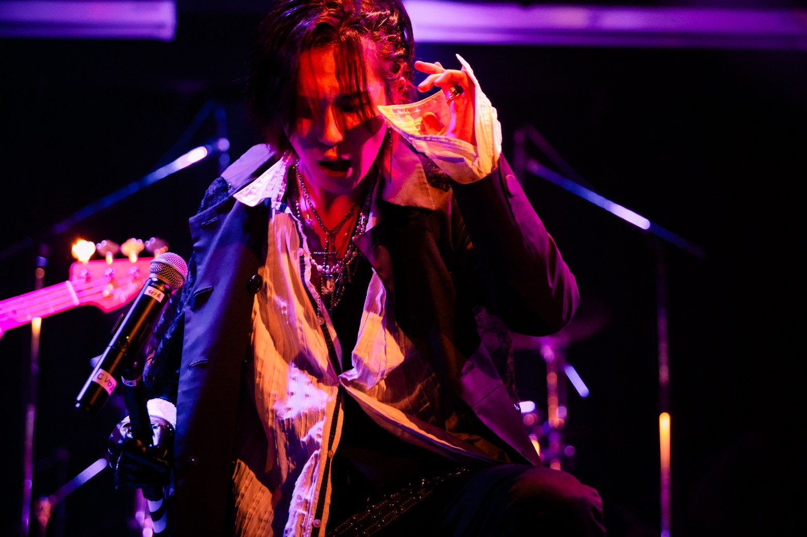

Guitar Ensemble
らん
Ran Guitar Ensemble
らん
ギターアンサンブル
Ran Guitar Ensemble
知っている曲を、ギターだけの合奏で。
主宰・編曲 秋山嵐之輔
Ensemble
ギターアンサンブル
らんギターアンサンブル
アルト・プライム・バス・ギタロンなど、音域の違うギターを重ねる合奏をしています。
SNSでは、パートが1つずつ重なっていく「曲当てクイズ」と、普通のギターで一緒に弾けるTAB譜を毎週公開しています。
Profile
主宰 秋山嵐之輔
- 全日本ギターコンクール 独奏部門
- 2026年 第57回 第二位
2024年 第55回 努力賞
2022年 第三位 - JGA ギター合奏コンクール（山梨県立北杜高等学校）
- 2017年・2018年 金賞・審査員特別賞
2019年 金賞（バンドマスター） - 活動
- らんギターアンサンブル 主宰・編曲
山梨県出身。中学3年でギターに出会う。山梨県立北杜高等学校でギター合奏に取り組み、JGA ギター合奏コンクールで3年連続金賞。
国際新堀芸術学院で学び、2024年にBグループのコンサートマスターを務める。2025年3月卒業。全日本ギターコンクール独奏部門で2026年に第二位。
現在は仲間とギターアンサンブル「らんギターアンサンブル」を主宰し、アニメソングやJ-POPの合奏用編曲と演奏を手がけています。

Live
ライブ
クラシックギターのほか、バンドのステージにも立っています。
お問い合わせ
演奏のご相談・ご連絡は、Instagram のメッセージからお願いします。
Instagram へ